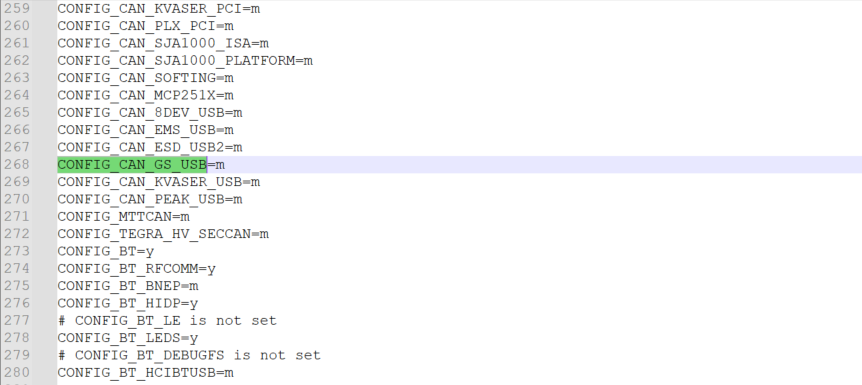
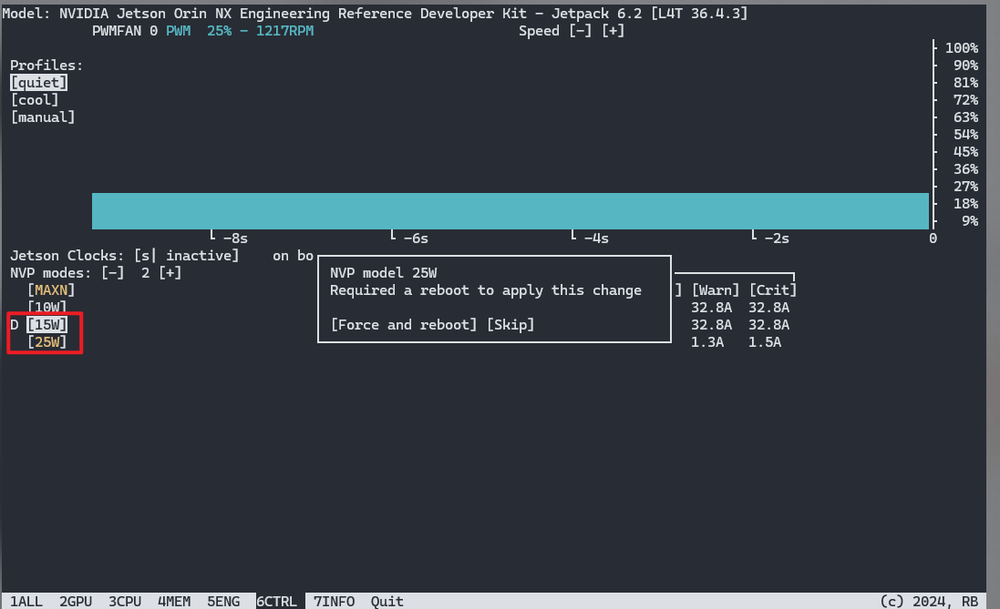
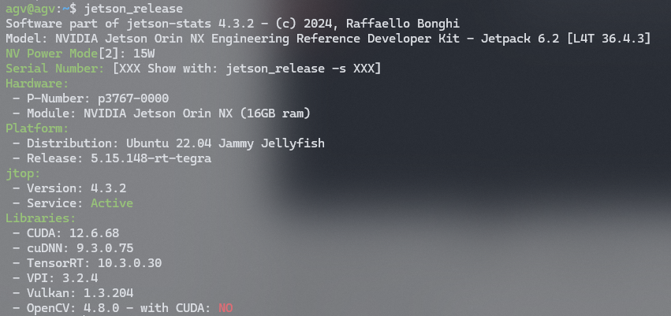

Jetson NX 刷机指南
Jetson 是 NVIDIA 推出的一系列嵌入式计算板和开发套件，专门为边缘人工智能和机器人应用设计，Jetson Orin NX 16GB出厂自带Jetpack5.x版本，最高只支持Python3.8，CUDA11.4以及Pytorch1.14，本文探究升级Jetpack6.2，同时支持自定义内核刷机，以及刷机之后的环境配置。
前置需要
- Ubuntu20.04及其以上的主机
- Jetson Orin NX 16GB
- 杜邦线，USB-C数据线
Ubuntu20.04及其以上的主机用于编译内核，通过USB-C将系统Flash至Jetson板子上，杜邦线用于将Jetson置于Recovery模式。
刷机及自定义内核
1. 使用SDK Manager刷机
英伟达的SDK Manager提供一套完整的刷机可视化流程，将其下载到主机侧，其页面如下：

在Step01界面，Product Category选择Jetson，System Configuration选择Target Hardware（记得把左边的Host Machine取消勾选，因为我们只需要为Jetson Orin NX烧录系统，而不需要为这个主机烧录系统），SDK Version默认为最新版本，此处我是JetPack 6.2.1，Additional SDKS可以不用选
注：Jetson需要设置为Recovery模式，及将REC引脚和GND引脚短接，通过USB-C连接至主机。

在Step02界面，可以选择要烧录到Jetson Orin NX中的软件包，一共有四个大类可以进行勾选，其中第一个是Linux系统，后面的三个是依赖驱动，可根据需要自行选择安装，最开始刷机的时候，后面三项都不需要勾选，我们只勾选Linux系统。

等待检测完成，输入主机密码，就开始自动下载各个软件包，这些软件包会先下载到主机内，下载完成之后再进入安装步骤，其中需要设置Jetson的用户名和密码等.

基础的Linux系统安装完成之后，我们先进入系统进行相关设置，此处拔掉短接线，正常模式启动。
-
连接网络
-
换源 此处使用ROS小鱼开发的一套工具
1
wget http://fishros.com/install -O fishros && bash fishros
此处选择5，一路按照引导操作即可。
-
使用SSH连接，用于后续其他包的安装
1
ifconfig # 查看对应的IP地址后续其他包（上面没选的后面三个包）的安装，可以通过SDK Manager的ssh连接进行，而不需要在通过USB-C连接。

2. 自定义刷机
需要注意的是，使用SDK Manager虽然方便，但是都是系统定义好的Linux内核，如果需要开启其余的一些功能，步骤繁琐一点。
比如笔者遇到的一个问题，在Jetpack5.x中Linux内核中，gs_usb默认是开启的，但是在Jetpack6.0+中，gs_usb并没有包含在Ubuntu内核中，所以需要自定义内核开启改功能。

笔者已经重刷了Kernel，开启了该功能，所以执行上述命令，没有报错。
下面介绍开启实时内核以及修改内核功能的步骤，我们需要在Linux的主机上进行操作。
-
安装依赖
1
2
3
4sudo apt-get install qemu-user-static
sudo apt install python3-pip device-tree-compiler
sudo apt-get install flex bison
sudo apt-get install libncurses-dev libssl-dev -
下载需要的包，默认下载到~/Downloads 链接：https://developer.nvidia.com/embedded/jetson-linux-r3643 我们需要图中标出的的四个压缩文件：

-
编译工具链
1
2
3cd ~/Downloads
mkdir ~/l4t-gcc
tar xf aarch64--glibc--stable-2022.08-1.tar.bz2 -C ~/l4t-gcc -
解压整合驱动程序包和根文件系统包
1
2
3
4
5
6cd ~/Downloads
tar xf Jetson_Linux_R36.4.3_aarch64.tbz2
sudo tar xf Tegra_Linux_Sample-Root-Filesystem_R36.4.3_aarch64.tbz2 -C Linux_for_Tegra/rootfs/
cd Linux_for_Tegra
sudo ./apply_binaries.sh
sudo ./tools/l4t_flash_prerequisites.sh -
修改内核 在/Linux_for_Tegra/source/kernel/kernel-jammy-src/arch/arm64/configs/目录下修改defconfig文件 例如在Jetpack5.x系列中，CONFIG_CAN_GS_USB是开启状态 
将其放在Jetpack6.2中的defconfig的末尾，其他的开启选项也像上面这样。
-
构建
1
2
3
4
5
6
7
8
9
10
11
12
13
14
15
16
17
18
19
20
21
22
23
24
25
26
27
28
29
30
31# 手动下载并扩展内核源
cd ~/Downloads
tar xf public_sources.tbz2 -C ~/Downloads/Linux_for_Tegra/..
cd ~/Downloads/Linux_for_Tegra/source
tar xf kernel_src.tbz2
tar xf kernel_oot_modules_src.tbz2
tar xf nvidia_kernel_display_driver_source.tbz2
# 构建 Jetson Linux 内核
cd ~/Downloads/Linux_for_Tegra/source
./generic_rt_build.sh "enable"
export CROSS_COMPILE=~/l4t-gcc/aarch64--glibc--stable-2022.08-1/bin/aarch64-buildroot-linux-gnu-
make -C kernel
export INSTALL_MOD_PATH=~/Downloads/Linux_for_Tegra/rootfs/
sudo -E make install -C kernel
cp kernel/kernel-jammy-src/arch/arm64/boot/Image ~/Downloads/Linux_for_Tegra/kernel/Image
# 构建 NVIDIA Out-of-Tree
cd ~/Downloads/Linux_for_Tegra/source
export IGNORE_PREEMPT_RT_PRESENCE=1
export CROSS_COMPILE=~/l4t-gcc/aarch64--glibc--stable-2022.08-1/bin/aarch64-buildroot-linux-gnu-
export KERNEL_HEADERS=$PWD/kernel/kernel-jammy-src
make modules
export INSTALL_MOD_PATH=~/Downloads/Linux_for_Tegra/rootfs/
sudo -E make modules_install
cd ~/Downloads/Linux_for_Tegra
sudo ./tools/l4t_update_initrd.sh
# 构建DTB
cd ~/Downloads/Linux_for_Tegra/source
export CROSS_COMPILE=~/l4t-gcc/aarch64--glibc--stable-2022.08-1/bin/aarch64-buildroot-linux-gnu-
export KERNEL_HEADERS=$PWD/kernel/kernel-jammy-src
make dtbs
cp kernel-devicetree/generic-dts/dtbs/* ~/Downloads/Linux_for_Tegra/kernel/dtb/ -
烧录 将Jetson orin nx置于recovery模式，USB-C连接至主机 在主机侧使用lsusb命令验证是否验证成功
1
2
3lsusb
# 出现下面的格式 即为连接成功
Bus <bbb> Device <ddd>: ID 0955: <nnnn> Nvidia Corp.执行烧录命令：
1
2cd ~/Downloads/Linux_for_Tegra
sudo ./tools/kernel_flash/l4t_initrd_flash.sh --external-device nvme0n1p1 -c tools/kernel_flash/flash_l4t_t234_nvme.xml -p "-c bootloader/generic/cfg/flash_t234_qspi.xml" --showlogs --network usb0 jetson-orin-nano-devkit internal
烧录成功之后，后续的操作和SDK Manager刷完系统之后，安装cuda等的包操作一致，使用SSH远程安装。
安装其他
安装浏览器
安装Google浏览器
1 | |
需要注意的是，刷机之后的snap版本是2.7.0，Jetson内核与snap2.7.0不兼容，所以需要回退Jetson兼容的旧版本Snap，否则会出现打不开Chrome/firefox浏览器的情况
执行下面的命令即可（安装Snap 2.68.5并锁定，使其不会被snap或apt更新）
1 | |
安装输入法
可参考链接
安装Jtop
Jetson板子无法使用nvidia-smi命令，所以替代工具为jtop，按以下命令进行安装：
1 | |

此时可以修改Jetson的供电功率，鼠标点击即可，我们将其设置为25w。
通过jetson_release可以查看当前板子信息

安装miniconda3
1 | |
安装Torch Cuda
参考链接：https://blog.csdn.net/ydscc/article/details/150064200
需要注意的是，numpy版本小于<2，才能适配
1 | |
1 | |
安装ROS2
还是使用小鱼ROS的脚本进行安装
1 | |
1 | |
1 | |